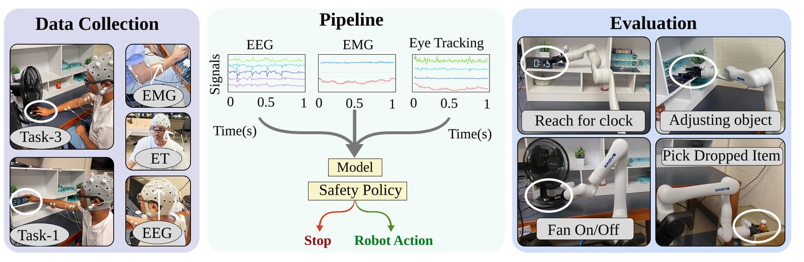
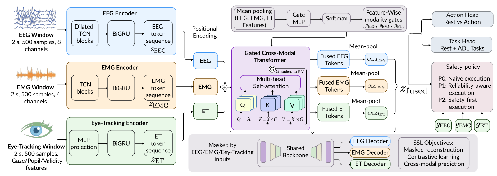
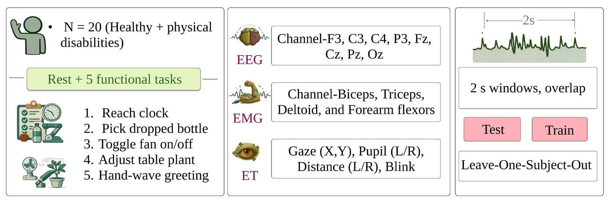
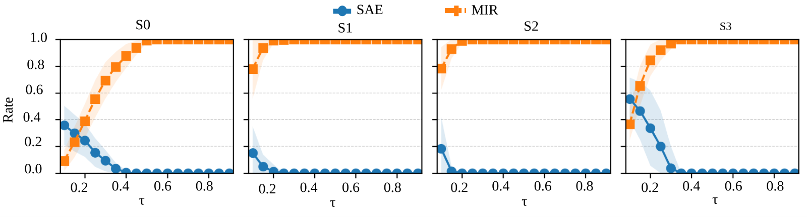

TriSaFe-Trans
A lightweight tri-modal transformer that fuses EEG, EMG and eye-tracking through reliability-gated cross-modal attention — and is judged not by accuracy alone but by what a safety policy actually does when one of those sensors fails.
{kind=link}

The problem
Fusing EEG, EMG and gaze gives an assistive arm three complementary views of user intent. It also gives it three things that can break. EMG is vulnerable to artefacts and electrode shift; eye tracking drifts out of calibration and loses the pupil; EEG is non-stationary across sessions and subjects.
Static fusion handles this badly — when one stream degrades, a model that assumed uniform quality keeps weighting it as if nothing happened. And because most work reports only window-level accuracy, the consequence never shows up in the numbers.
Research question. Can a safety-aware tri-modal transformer, evaluated at the policy level and tested under sensor failures, reduce unsafe actions and missed assistance compared with unimodal and naive multimodal baselines?
Architecture
Each modality gets a lightweight encoder — a temporal convolutional network followed by a bidirectional GRU — and the resulting token sequences are fused by a gated cross-modal transformer in which feature-wise modality gates modulate attention. Those same mean gates are then reused downstream to build the reliability- and uncertainty-aware safety policies, so the gate is not just an internal weight but an interpretable signal.
{kind=link}

Two-stage training
-
Multi-objective self-supervised pretraining
On unbalanced windows, two augmented views per sample are produced by random timestep masking and modality dropout. The backbone optimises masked reconstruction of EEG, EMG and eye-tracking tokens, a symmetric contrastive loss between fused embeddings, and a cross-modal prediction loss between modality summaries. EEG and EMG reconstruction are weighted more heavily to emphasise neural and muscular intent cues.
-
Safety-aware supervised fine-tuning
Balanced LOSO windows train a joint action–task objective: the action head sees all windows for binary REST/ACTION, the task head only ACTION windows. Eye-tracking dropout is applied during fine-tuning so the model meets partial degradation in training rather than first at deployment.
Data collection
Twenty healthy adults performed five ICF-aligned assistive tasks — reach for a bottle, reach for a clock, fan on/off, repositioning a plant, and a waving gesture — 16 trials each, with a fixed structure of pre-trial rest, cue, movement and post-movement rest. EEG came from an Enobio-8 at 250 Hz, EMG from a 4-channel wireless PLUX system placed to SENIAM guidelines, and gaze from Pupil Labs Neon glasses, all streamed concurrently into iMotions over Lab Streaming Layer. A hidden semi-Markov model produced fine-grained ACTION vs REST boundaries.
{kind=link}

Results
Nominal sensing (S0)
| Model | Action head | Task head | ||
|---|---|---|---|---|
| Acc | Bal-Acc | Acc | Bal-Acc | |
| TriSaFe-Trans | 0.903 ± 0.079 | 0.882 ± 0.079 | 0.727 ± 0.096 | 0.680 ± 0.100 |
| TriModal-GRU | 0.826 ± 0.127 | 0.825 ± 0.129 | 0.682 ± 0.145 | 0.558 ± 0.092 |
| TriModal-TCN | 0.786 ± 0.162 | 0.784 ± 0.166 | 0.576 ± 0.206 | 0.478 ± 0.132 |
| TriModal-Hybrid | 0.780 ± 0.118 | 0.779 ± 0.121 | 0.594 ± 0.150 | 0.410 ± 0.098 |
Mean ± std across 20 LOSO folds. Paired Wilcoxon signed-rank with Holm correction: significant against GRU and Hybrid on every reported metric; against TCN, significant for task decoding and action AUPRC.
Each modality earns its place
Ablations show genuinely complementary roles rather than one dominant stream. EMG is the best single detector of whether action is happening; gaze is the best single discriminator of which task it is; EEG alone is weak for task specificity. Fusing all three beats the best unimodal setting on both heads.
| Input | Action Bal-Acc | Task Bal-Acc |
|---|---|---|
| EEG only | 0.685 ± 0.130 | 0.261 ± 0.050 |
| EMG only | 0.827 ± 0.114 | 0.412 ± 0.075 |
| Eye tracking only | 0.778 ± 0.172 | 0.585 ± 0.128 |
| All three (TriSaFe-Trans) | 0.882 ± 0.079 | 0.680 ± 0.100 |
Multimodal Synergy Gain — tri-modal balanced accuracy minus the best unimodal — is +0.055 for action and +0.095 for task. Several baselines record negative action synergy: adding modalities makes them worse.
The safety–responsiveness trade-off
Three execution policies were defined over the action probability: P0 uses it raw, P1 scales it by measured reliability, P2 further penalises uncertainty. Window-level outcomes are scored as correct move, unsafe move, missed intent or safe idle.
| Policy | SAE ↓ unsafe among executed |
UAR ↑ correct on ACTION |
MIR ↓ missed intent |
NRA ↑ safe idle on REST |
|---|---|---|---|---|
| P0 — raw probability | 0.415 | 0.637 | 0.055 | 0.819 |
| P1 — reliability-scaled | 0.415 | 0.637 | 0.055 | 0.819 |
| P2 — safety-first | 0.155 | 0.313 | 0.569 | 0.975 |
This table is the point of the paper, and it is not a clean win. The safety-first policy cuts unsafe executed actions from 0.415 to 0.155 and pushes rest safety to 0.975 — but missed intent rises from 0.055 to 0.569. P2 is a conservative upper bound, not a free lunch. What the framework buys is the ability to choose the operating point against a stated safety budget rather than discovering it in deployment.
Formally, the operating point is selected as the threshold minimising missed intent subject to unsafe execution staying under a budget. Sweeping on the validation split: a 5% unsafe budget lands at SAE 0.035 with MIR 0.793; a 3% budget at SAE 0.005 with MIR 0.875. P1 collapses onto P0 under nominal sensing by construction — all modalities available means all gates are 1 — and only diverges once a sensor actually fails.
{kind=link}

Deployment
A ROS 2 pipeline connects inference to a Kinova Gen3 with a Robotiq gripper. Task templates
were captured by teleoperating the arm with an Xbox controller and recording joint positions
at approach, grasp and release, then replayed autonomously through
FollowJointTrajectory goals and GripperCommand messages. The
predicted task ID selects the template; the safety policy decides whether it is issued at
all. If execution is suppressed, no command is sent and the arm holds position.
At 1.201 M parameters and roughly 10.9 ms per 500-sample window on CPU (~92 Hz), latency is essentially unchanged between full sensing and eye-tracking dropout.
Video
Honest limitations
The dataset comes from healthy adults performing the tasks themselves, so these numbers are a non-clinical benchmark rather than validation in target assistive users. That distinction matters more than usual here: in real users EMG may be weak or absent, which means deployment would resemble the degraded-EMG scenario, leaning far harder on EEG and gaze. The unsafe-action fraction under P0 (0.415) is too high for unsupervised use, which is precisely why the policy layer and its explicit budget exist.